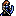

Character Overview
Tanya is your typical speedy female archer in this game, and she is recruited at Turn 3 in the first chapter of the game. She is known
for being a very weak unit, due to her low STR and simply for being an archer in Thracia 776.
Archers face many weaknesses in Thracia 776, as they have no enemy-phase potential, cannot capture, and generally have low STR
to deal any significant damage. Enter Tanya. Tanya has all of these weaknesses, so even if you manage to scroll abuse her stat
growths, she's limited in her utility.
Tanya is fast enough to double enemies and chip in the early game, and is mostly useful for feeding kills to Leif or other weak units,
as they could generally make more use of the EXP. However, Tanya can still be a decent combat unit as long as you mend her terrible
STR, and get her bow rank up to B so that she can utilize the Brave Bow.
Despite her blatant weaknesses, Tanya can still be quite strong if you get lucky with a few STR level-ups. With the Brave Bow, she can
deal some pretty good damanage despite having a somewhat low PCC. She takes a lot of effort, but she's not completely hopeless.
Base Stats and Growths
| Level 1 Archer  | HP | STR | MAG | SKL | SPD | LCK | DEF | CON | MOV |
|---|---|---|---|---|---|---|---|---|---|
| Base Stats | 20 | 3 | 1 | 6 | 10 | 6 | 2 | 4 | 6 |
| Growth Rates | 60% | 35% | 15% | 55% | 70% | 60% | 15% | 5% | 2% |
Tanya boasts a high 10 base SPD, which allows her to double many enemies in the early game. However, she won't be able to one-round any of them because of another very low base stat. Tanya's most troubling stats are her STR and CON. A base 3 STR means that Tanya can't do significant damage, even to early game enemies, and even if you manage to build her bow rank, heavier bows will weigh her down even more due to her base 4 CON. As Tanya gains levels, there's a good chance she'll miss out on vital STR and CON level-ups, hindering her damage and attack speed.
These base stats are made even worse when you consider Tanya's awful 5% CON growth rate, and her mediocre 35% STR growth. Her SKL/SPD/LCK growths are great, but Tanya needs STR level-ups to be a viable combat unit, since that's all she can really do to be useful. She also has a troubling 15% DEF growth, which makes her quite fragile with her base 20 HP. These stats can be fixed with the Crusader Scrolls, but many of the important scrolls you'll need to make Tanya viable are made available much later in the game, and Tanya will need to catch-up before she's worthy of these scrolls. Until then, utilize her for chip damage and try to feed her kills when you can if you're serious about using her long-term.
Other Stats
| Weapon Ranks | Skills | PCC | Leadership Stars | Movement Stars | Promotion Gains |
|---|---|---|---|---|---|
| Bow - E | No Skills | 2 | 0 | 0 | STR + 2 / MAG + 1 / SKL/SPD + 3 / DEF + 2 / CON/MOV + 1 / Bow Rank + 1 |
An E Bow rank is going to be quite difficult to level up. You'll need to use Tanya very frequently to get her Bow Rank up. Luckily, her promotion grants her an extra rank, but you'll still need to level up two full bow ranks to get Tanya to B rank so that she can use the Brave Bow. I emphasize the importance of the Brave Bow because Tanya needs it to deal great damage in the middle-late game. This is especially so, since Tanya's 2 PCC isn't enough to crit reliably, even with Killer Bows. No skills such as Adept/Accost doesn't help either, since those skills are useful for extra crit procs. All of this combined should be enough to convince you to level up Tanya's Bow Rank as much as you can.
The other promotion gains are nice, but it isn't enough to remedy Tanya's weaknesses. A +3 to both SKL/SPD doesn't mean much since Tanya will most likely cap those stats anyway with her growths. A +2 to STR and a +1 to CON is a start, but it's not nearly enough to fix Tanya's terrible CON/STR. Scroll abuse is a necessity here.
PRF's and Support Bonuses
| This unit does not have any PRFs. |
|---|
Supports: Orsin, Dagdar
Supported by: Orsin
Character Tips
Only the Nál scroll can increase CON, and even so, it only increases Tanya's CON by 10%, so her CON growth rate can only be as high as 15%. So, Tanya will almost always suffer from an AS decrease due to a heavy bow, if you even get her Bow Rank that high. It also offers a nice 10% boost to STR, so this scroll is probably the best one you could have Tanya hang on to. Other good Crusader Scrolls include the Dain scroll for the significant DEF boost, and the Hoðr scroll for HP. Other than that, Tanya doesn't require many other scrolls since her growth are pretty decent for SKL/SPD/LCK. I still highly recommend that you try to train Tanya before you acquire these scrolls so that she can at least promote quickly as you're getting these scrolls.
All in all, Tanya requires a lot of investment to just be "good". Whether she's worth the effort is up to you.